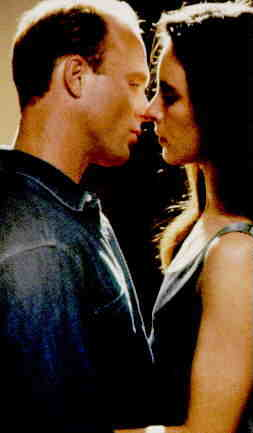

China Moon B+, A US/1991/Color/Widescreen 2.35:1/Stereo Surround/99 minutes/Directed by John Baily/Starring Ed Harris, Madelaine Stowe/Orion/19 Chaps/CLV/$39.99 While the plot convolutions may be difficult to follow, a seedy reality of characters sucked into a whirlpool of darkness and deception unfolds with panache in the debut directing effort of fine cinematographer John Bailey. This updating of classic forties film noir manages to use beautiful, glossy color without sacrificing the familiar genre atmosphere. Ed Harris inhabits the character of a small town homicide
detective with his usual intelligent acting aplomb. Harris disappears into roles and often
goes without due praise owing to this chameleon ease. Kyle Bodine is a smart cop seduced
both by a beautiful woman and his own confidence. Madelaine Stowe makes her most stunning
screen appearance in China Moon. She is as luminous as fine porcelain. She's not the
typical tough noir femme fatale. Rachel Munro is a housewife drawn to desperation by an
impossible marriage. Stowe and Harris are dandy together.  Bailey keeps the pace and turns of the movie at an even keel. Each section of the film plays itself to perfection and leads logically to the next. Bailey's skill as a director of photography combines with veteran cinematographer Willy Kurant to produce a very handsome film that succeeds on enmeshing it's audience just as Rachel Munro catches Kyle Bodine in her inadvertently corrupted web. Composer George Fenton supplies a moody jazz score that rates with his best work. China Moon was one of a small group of Orion films that got caught up in that company's bankruptcy problems several years ago and wound up collecting dust on an anonymous shelf somewhere. When it finally did get released, it was given only half-hearted treatment by the studio, and worse, inexplicably, Madelaine Stowe made extremely rude and condescending remarks about the production. The film deserves a better fate and hopefully will be discovered by film lovers hungry for a cinema meal prepared with elegant skill. The disc is a real joy. The film looks better than it did in the theaters in its release earlier this year. Improbably, the transfer produces the sparkle that was missing. Blacks have the depth associated with the best looking transfers. All the colors are stable. The images are consistently sharp. The soundtrack is extremely pleasing. Discover China Moon. You'll enjoy revisiting it for a clearer picture of the night masked machinations. |